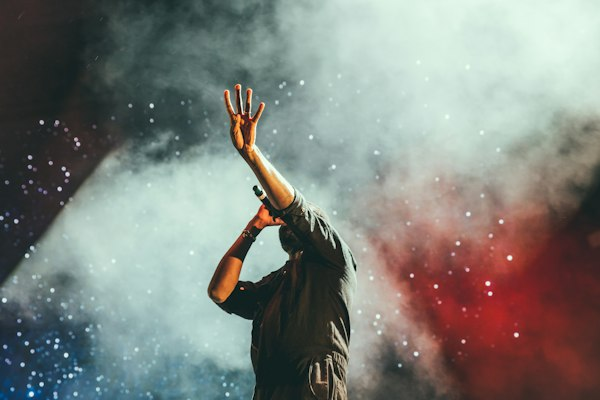
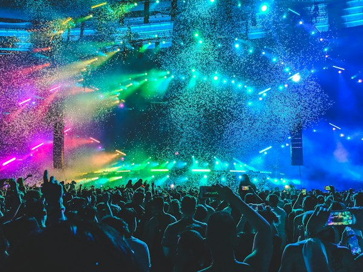
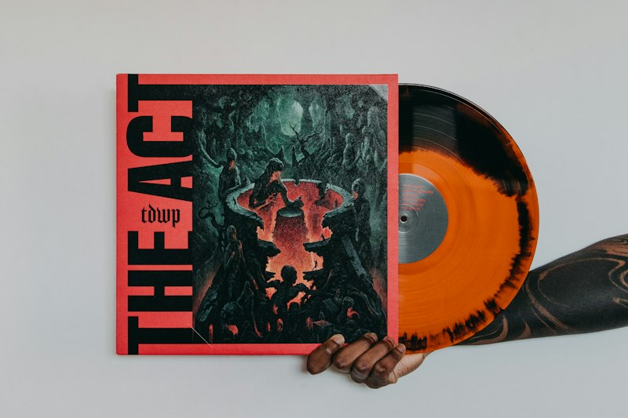

Alex
Voz y guitarra
Alex escribe canciones en servilletas y nunca encuentra sus púas.
INDIE ROCK · ESPAÑA
Somos Los Días Raros. Cuatro personas, guitarras que suenan demasiado alto y canciones para todo eso que no sabemos explicar.
NUEVO ÁLBUM · TODO LO QUE NO DIJIMOS
Los Días Raros nació en un local de ensayo pequeño, entre amplificadores viejos, cafés fríos y canciones que nunca terminaban de salir como esperábamos. Con el tiempo, aquellas ideas se convirtieron en nuestro primer disco y en una excusa para recorrer salas, festivales y ciudades. Hacemos música para los días buenos, los malos y todos los que quedan en medio.
Voz y guitarra
Alex escribe canciones en servilletas y nunca encuentra sus púas.

Bajo y coros
Marina construye las líneas de bajo que sostienen cada canción.

Batería
Dani convierte cualquier objeto del local de ensayo en un instrumento.

Guitarra y sintetizadores
Lucía mezcla guitarras, sintetizadores y sonidos que encuentra por casualidad.

Nueve canciones sobre las conversaciones pendientes, las ciudades que cambian y las personas que siguen apareciendo en nuestros recuerdos. Nuestro disco más directo, más imperfecto y más nuestro.
Estamos preparando nuevas noches de ruido, luces y canciones compartidas. Estas son algunas de nuestras próximas fechas ficticias.
Sala Horizonte
21:00
Club Subterráneo
21:30
Sala Prisma
20:30
¿Tienes una propuesta para un concierto, una colaboración o simplemente quieres contarnos qué canción te acompaña últimamente? Escríbenos.